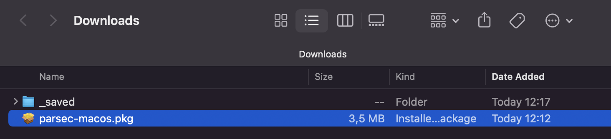
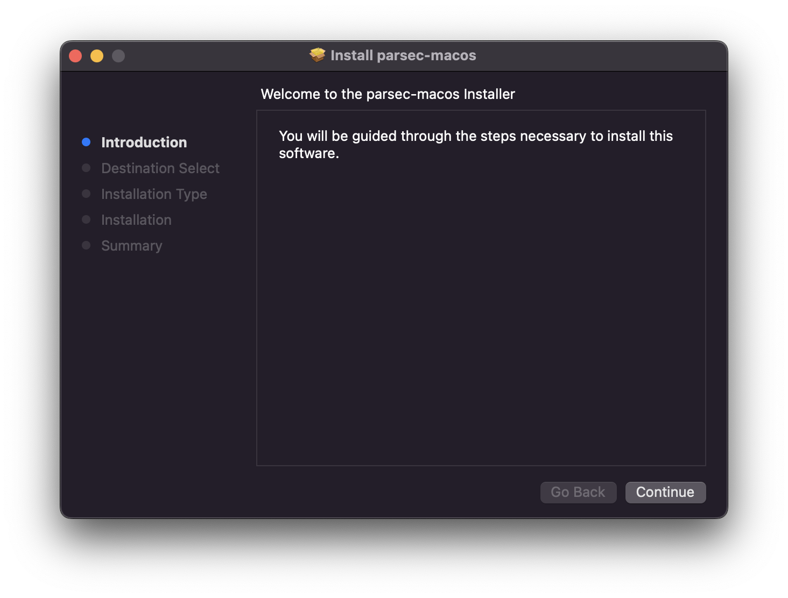
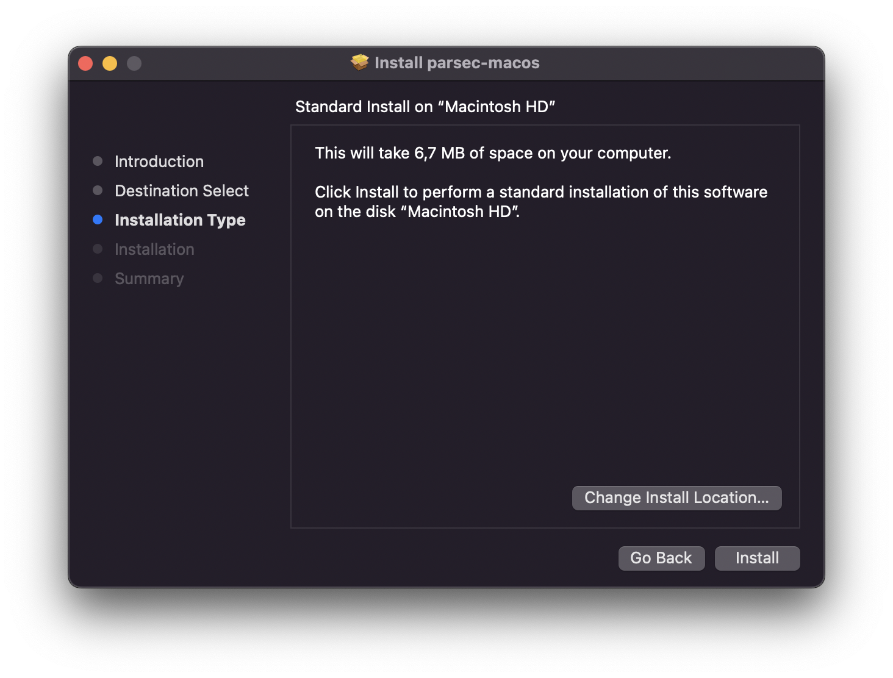
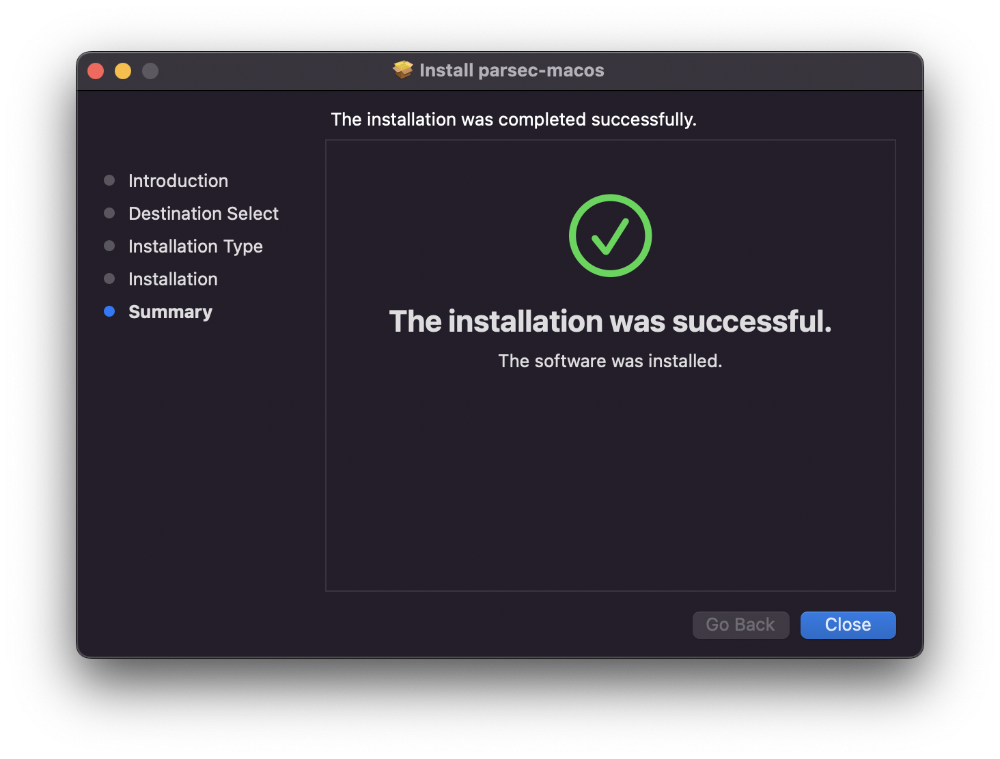
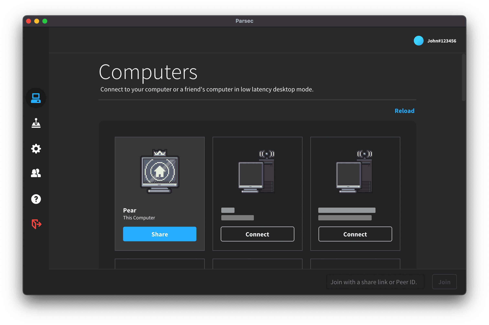

Parsec App auf macOS installieren
Dieser Artikel behandelt die Installation und Grundkonfiguration der Parsec-App unter macOS.
Inhaltsverzeichnis
- Anforderungen
- Installation
- Anmelden und Verbinden
- Hosting auf macOS
Anforderungen
Parsec ist für macOS 10.15 (Catalina) oder neuer verfügbar und erfordert Metal-Unterstützung. Parsec unterstützt keine Dateisysteme mit Berücksichtigung der Groß- und Kleinschreibung. Für das Hosting benötigt Parsec vorzugsweise auch 2019-Hardware oder neuere.
Installation
- MacOS-Installationsprogramm von der Download-Seite herunter laden
- Installationsprogramm in Download-Ordner aufsuchenund doppelklicken, um es auszuführen

- Auf "Weiter" bzw. "Continue" klicken

- Ggf. Installationsort ändern, andernfalls auf "Installieren" klicken

- Auf "Schließen", um die Installation abzuschließen

Anmelden und Verbinden
- Parsec starten
- Anmelden oder ein Konto erstellen, falls noch keins vorhanden
- Einen Freund über die Seitenleiste hinzufügen oder mit demselben Konto auf einem anderen Computer anmelden, der hosten kann, und dann auf dem lokalen macOS-Computer auf "Verbinden" klicken, um dem Host-Computer beizutreten

=======
>>>>>>> df059c84f513011699f9efcd213c6e9b620a8e01